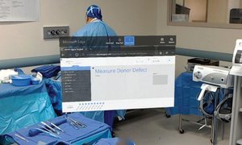

In 2019 in was found that VR can fill very niche role to within the medical community. If a mother is in labor and she does not want to be given or is unable to be given pain killers during the labor process then she can alternativly opt to wear a head mounted virtual reality device to potentially subside the pain. In a study conducted by Frey in which women were placed into a virtual enviornment that simulated diving with manatees it was found that the women 1) Spent less time tinking about pain. 2) Felt less intense pain. 3) rated their pain as less "unpleasent." The majority of these women then went on to claim that they enjoyed the experience and would be interested in further development in VR technology specifically for child birth.
Read MoreAugmented reality can offer benefits in the operating room as well. However, unlike the uses of VR in Frey's research a study by Tepper back in 2017 focused on the ways in which Augmented reality could enhance the performance of the doctors working in the operating room. This journal focuses on the uses of what was, at the time, the most cutting edge AR technology available, the microsoft HoloLense. They were able to find that doctors were able to increase their work efficency since they were able to access information quickly through the HoloLense rather than needing to physically go find the information they are looking for. Since this study was done in 2017 and AR technology has sufficently advanced since 2017 we can safely assume that AR today would be just as if not more useful that 7 years ago.
Read More Augmented reality technology has recently been found to be within an FDA acceptable range of error to be used in tools to be used in the. In a study by Morley in 2023 they tested a new peice of AR software created by the company Medivis. This software is used to help doctors position their tools, avoid vitals, and identify tumourous growths. Morley and their associates found that the Medvis software had a positional tracking error standard deviation of .75mm which means the software is FDA acceptable. The testing of the software was done on the Microsoft HoloLense 2, a consumer grade head mounted AR diplay. This proves that AR software is viable int the operating room if consumer products have this degree of accuracy.
Read More